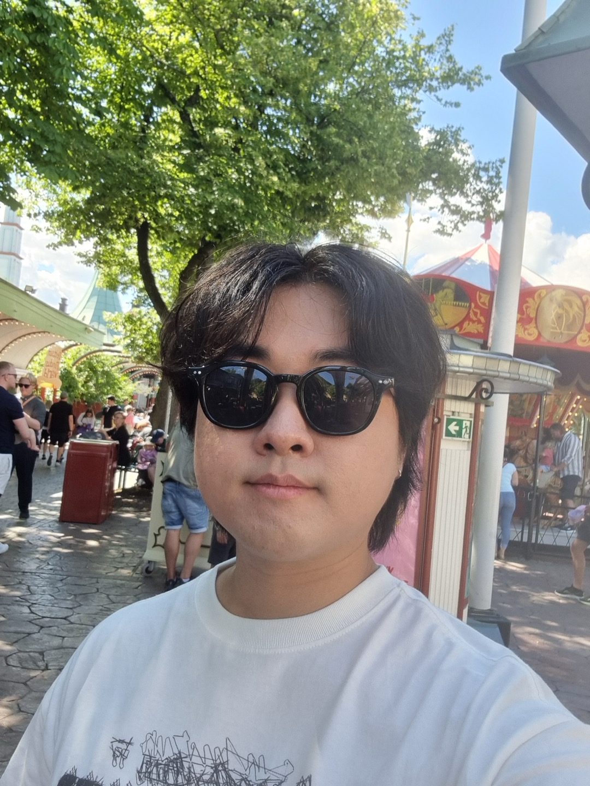

Introduction
Hi, I'm Yeh Chul! Welcome to my personal website where you can learn all about my journey and passions. Enjoy your stay!

About Me
Hey there! I'm Yeh Chul Shin, but you can call me Jason. Born on June 27th, 2001, in South Korea, I spent most of my life in Mexico...
Lost opportunities
- 2020 - Rejected University of Toronto and University of Vancouver offer due to financial issues
- 2021 Spring - Dropped out of Computer Science at ITESM due to school office's unprofessionalism (personally felt discriminated)
- 2024 Spring - First interview rejected due to lack of skills and flexibility at DoubleMe
- 2024 Fall - Rejected Indiana University transfer student due to financial issues
Gains
- 2021 - 2022 Experience in Republic of Korea Army in 23rd District
- 2023 March - Admitted to Hanyang University as Economics Major vs Sungkyunkwan University as Global Business Administration Major
- 2024 Summer - Vacation to Sweden. 2001 - 2024 Continents: America - Mexico, United States | Asia - South Korea | Europe - Sweden
- 2024 October - Invested total of 24,000 USD in stocks reaching Market dividend of $6,600 USD 28.72%
Goals
- Certificates: DELE C1 | CFA level 1
- Travel: Japan - Osaka (Feb 2025) | Singapore - Singapore | France - Paris | Spain - Madrid & Barcelona | Turkey - Ankara | Canada - Vancouver | ...
- Programming: HTML/CSS/JavaScript | Python | Java | C++
- Finance: Dividend yield to 1000 USD per month by 2025-2026 | 1500 USD per month by 2026-2027
Passive Incomes
- Dividend Stock
- Index Funds
- Real Estate
- Cryptocurrency
- Rent out home short-term (Airbnb)
- YouTube Content:
- Create an App